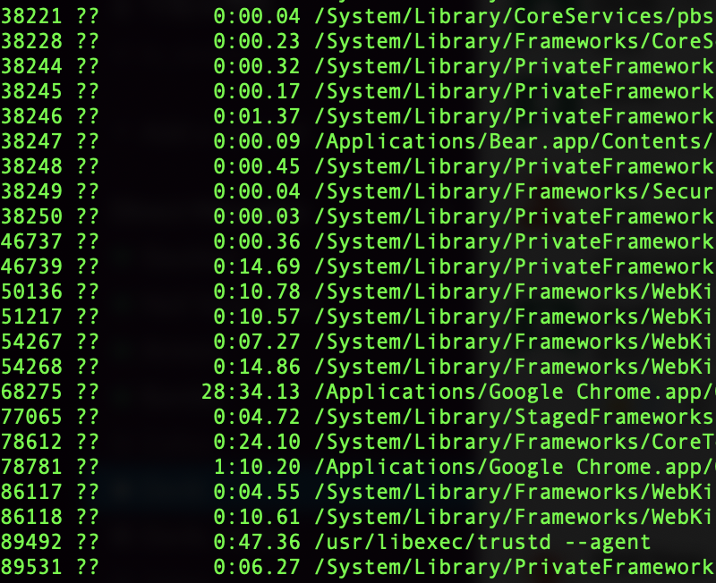
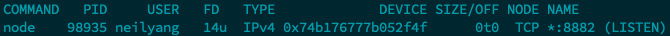

【Terminal】Terminal
基本指令
cd切換路徑pwd取得目前所在位置ls列出目前檔案列表ls -alf顯示詳細資訊
控制檔案
mkdir建立新的目錄touch建立新的檔案echo 狀態練習 > a.txt新增一個檔案a.txt內容為狀態練習cp複製檔案
把檔案 index.html 複製一份成 about.html：
1 | cp index.html about.html |
mv移動檔案 (做為更名使用)
把檔案 index.html 更名成 info.html：
1 | mv index.html info.html |
rm刪除檔案
刪除檔案 index.html：
1 | rm index.html |
刪除在這個目錄裡所有的 html 檔：
1 | rm *.html |
刪除資料夾 test：
1 | rm -rf test |
清空訊息
ctrl + u 清除所有正在輸入的內容，清除輸入匡clear 清空 terminalhistory -c 清除 terminal 歷史輸入訊息
顯示訊息
history 顯示歷史輸入訊息ps -ax 顯示所有正在執行的工作序列ps -ax | grep <application_name> 顯示正在執行的特定應用程式。ex: ps -ax | grep chromels 顯示路徑下所有檔案ls -alf 顯示路徑下所有檔案的詳細資訊
加上 & 表示背景執行
npm run dev & 背景執行 node，無法用 ctrl + c 中斷
中斷方法
找到 process ID (PID)，執行 kill <PID>，可以中斷該程序的執行killall <application_name>，中斷該特定應用程式的所有工作序列

查看佔用 port 號
netstat -an 查看所有佔用 port 號netstat -an | grep 8882 特定 port 號查詢
Mac 的
netstat指令看不見 PID
查看 port 號的 PID
lsof -i:8882 8882 port 資訊如下

- Post title：【Terminal】Terminal
- Post author：Neil Yang
- Create time：2020-07-03 00:00:00
- Post link：https://des86532.github.io/2020/07/03/Terminal/terminal/
- Copyright Notice：All articles in this blog are licensed under BY-NC-SA unless stating additionally.